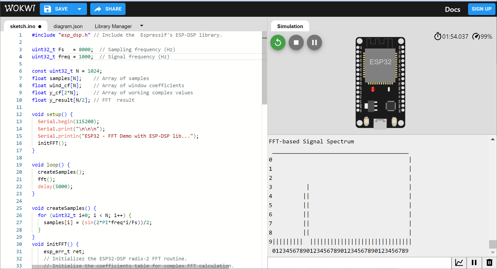
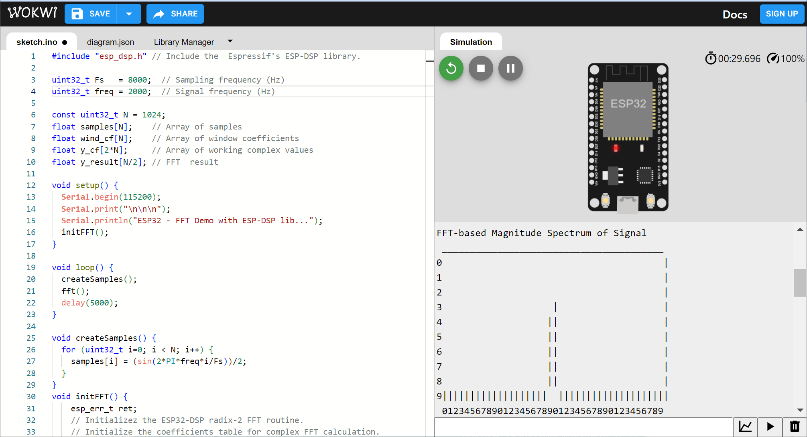
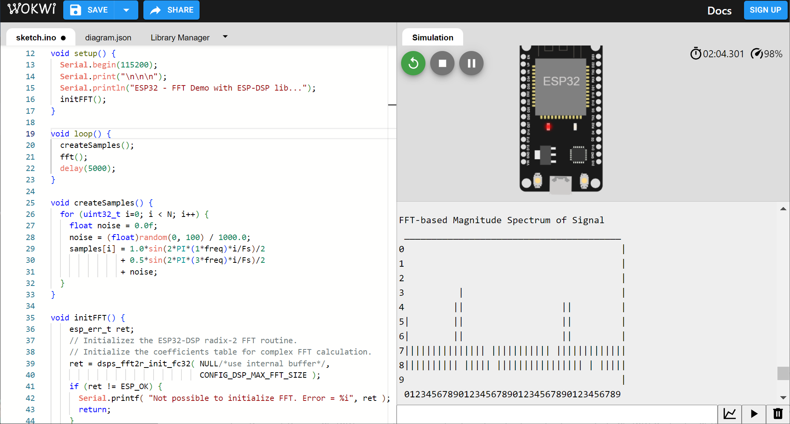
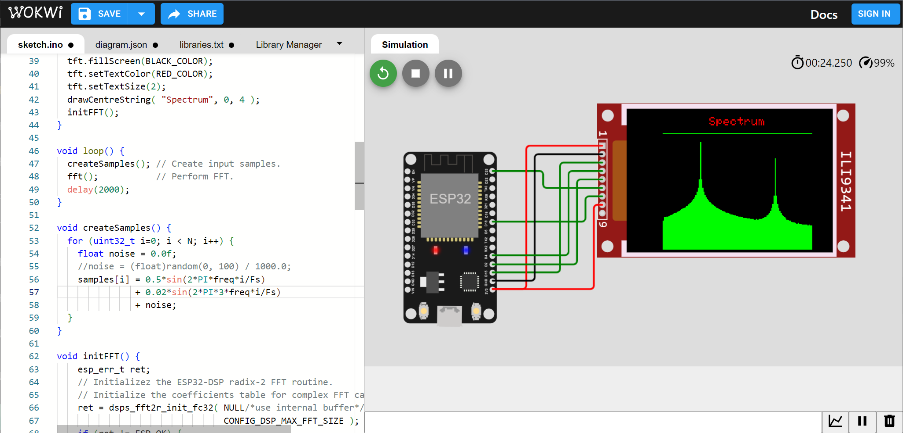

การใช้งาน ESP32 เพื่อประมวลผลข้อมูลด้วย FFT (Fast-Fourier Transform)#
▷ Espressif DSP Library#
บริษัท Espressif Systems ผู้พัฒนาชิป ESP32 SoC ได้จัดทำไลบรารีที่มีชื่อว่า ESP-DSP (Github Repo) ซึ่งเป็นส่วนหนึ่งของ ESP-IDF: Espressif IoT Development Framework และใช้สำหรับการประมวลผลสัญญาณเชิงเลข (Digital Signal Processing)
ไลบรารีดังกล่าวประกอบด้วยฟังก์ชันในภาษาซี และชนิดข้อมูลที่สามารถเลือกใช้ได้ ซึ่งมีขนาด 16 บิต หรือ 32 บิต
s= signed integeru= unsigned integerf= floatc= complex
นอกจากนั้นแล้วยังมีการจำแนกฟังก์ชันตามประเภทของสัญญาณหรือข้อมูลที่นำมาใช้
sใช้กับข้อมูลสำหรับสัญญาณมิติเดียวiใช้กับข้อมูลสำหรับสัญญาณสองมิติ เช่น ข้อมูลภาพmใช้กับข้อมูลสำหรับเมตริกซ์qใช้กับลำดับข้อมูลที่มีความยาวจำกัด
ฟังก์ชันที่มีชื่อลงท้ายด้วย ansi จะหมายถึง การเขียนโค้ดด้วย ANSI C ไม่เจาะจงใช้งานกับชิปใด ๆ
แต่ถ้าเป็น ae32 หรือ aes3 จะใช้กับชิป ESP32 และ ESP32-S3 ตามลำดับ
เนื่องจากมีการใช้คำสั่งในภาษา Assembly (Optimized Code) เจาะจงใช้กับชิปดังกล่าว
ตัวอย่างฟังก์ชันในไลบรารีที่ใช้กับสัญญาณข้อมูลมิติเดียว ได้แก่
- Dot-Product of Vectors
- Basic Vector & Matrix Operations
- FFT (Fast Fourier Transform: Radix-2 & Radix-4)
- DCT (Discrete Cosine Transform)
- IIR Filter
- FIR Filter
- Convolution and Correlation
- Complex Tone Generator
- Development support Functions
- Window Generation Functions
- Kalman Filter
บทความนี้จะกล่าวถึงเฉพาะการใช้งานฟังก์ชันสำหรับการคำนวณ FFT (Fast Fourier Transform)
ตัวอย่างฟังก์ชันที่เกี่ยวข้องกับการคำนวณ FFT (Radix-2)
(./fft/include/dsps_fft2r.h)
-
ฟังก์ชันสำหรับการเริ่มต้นและสร้างตารางค่าสัมประสิทธิ์ก่อนนำไปใช้ในการคำนวณ FFT (Radix-2) เขียนโค้ดด้วย ANSI C
dsps_fft2r_init_fc32( float *fft_table_buff, int table_size )ใช้กับชนิดข้อมูลแบบ float ขนาด 32 บิต ประมวลผลข้อมูลเป็นแบบเชิงซ้อน (Complex)dsps_fft2r_init_sc16( int16_t *fft_table_buff, int table_size )ใช้กับชนิดข้อมูลแบบ signed integer ขนาด 16 บิต ประมวลผลข้อมูลเป็นแบบเชิงซ้อน (Complex)
-
ฟังก์ชันคำนวณ FFT (ANSI C)
dsps_fft2r_fc32_ansi( float *data, int N )dsps_fft2r_sc16_ansi( int16_t *data, int N )
- ฟังก์ชันคำนวณ FFT (เจาะจงใช้กับ ESP32)
dsps_fft2r_fc32_ae32( float *data, int N )dsps_fft2r_sc16_ae32( int16_t *data, int N )
- ฟังก์ชันคำนวณ FFT (เจาะจงใช้กับ ESP32-S3)
dsps_fft2r_fc32_aes3( float *data, int N, )dsps_fft2r_sc16_aes3( int16_t *data, int N )
- ฟังก์ชันสำหรับการกลับค่าบิต (Bit Reverse Operation) เพื่อจัดเรียงลำดับข้อมูลที่ได้จากการคำนวณ FFT และง่ายต่อการนำไปใช้งาน
dsps_bit_rev_fc32_ansi( float *data, int N )dsps_bit_rev_sc16_ansi( int16_t *data, int N )
- ฟังก์ชันสำหรับแปลงข้อมูลเชิงซ้อนที่ได้จากการคำนวณ FFT ให้เป็นข้อมูลจำนวนจริงสองชุด
dsps_cplx2reC_fc32_ansi( float *data, int N )dsps_cplx2real_sc16_ansi( int16_t *data, int N )
N หมายถึง FFT Size และค่าสูงสุดที่สามารถใช้ได้ ถูกกำหนดไว้โดย CONFIG_DSP_MAX_FFT_SIZE
ซึ่งมีคงที่เท่ากับ 4096
▷ ESP32 FFT Demo#
ถัดไปเป็นตัวอย่างการแปลงข้อมูลของสัญญาณด้วย FFT (Fast-Fourier Transform) และโค้ดตัวอย่าง Arduino Sketch มีขั้นตอนการดำเนินการ ดังนี้
- สร้างสัญญาณอินพุตรูปคลื่นไซน์ที่มีความถี่
freqเช่น 1000Hz และชักตัวอย่างข้อมูลด้วยความถี่Fsเช่น 8000Hz แล้วเก็บข้อมูลลงในอาร์เรย์samples[]ซึ่งมีชนิดข้อมูลแต่ละตัวเป็นfloatและมีจำนวนข้อมูลNเท่ากับ 1024 - สร้างอาร์เรย์
wind_cf[]เพื่อใช้เก็บค่าคงที่ตามจำนวนNและได้จากการฟังก์ชัน Hann Windowing Function - สร้างอาร์เรย์
y_cf[]เพื่อใช้ในการเก็บข้อมูลสำหรับนำไปใช้ในการคำนวณ FFT ชนิดข้อมูลแต่ละตัวเป็นfloatแต่เนื่องจากการคำนวณด้วย FFT จะต้องใช้กับข้อมูลเชิงซ้อน จึงมีการจัดเก็บและมีลำดับข้อมูลเป็น Re[0], Im[0], Re[1], Im[1], ... ไปตามลำดับ - ก่อนเริ่มต้นการคำนวณ FFT จะต้องนำข้อมูลอินพุตจากอาร์เรย์
samples[]ไปใส่ลงใน อาร์เรย์y_cf[]ในตำแหน่งที่เป็น Re[..] ส่วนที่เป็น Im[..] ให้มีค่าเป็น 0 - สร้างอาร์เรย์
fft_result[]ใช้เก็บค่าสำหรับขนาดของค่าสัมประสิทธิ์ที่ได้จากการคำนวณ FFT และนำไปใช้แสดงรูปกราฟ เพื่อง่ายต่อการตรวจสอบความถูกต้อง
ฟังก์ชันที่เรียกใช้สำหรับการคำนวณ FFT ได้แก่
dsps_fft2r_init_fc32( ... )dsps_fft2r_fc32( ... )dsps_bit_rev_fc32( ... )dsps_cplx2reC_fc32( ... )
#include "esp_dsp.h" // Include the Espressif's ESP-DSP library.
uint32_t Fs = 8000; // Sampling frequency (Hz)
uint32_t freq = 1000; // Signal frequency (Hz)
const uint32_t N = 1024;
float samples[N]; // Array of samples
float wind_cf[N]; // Array of window coefficients
float y_cf[2*N]; // Array of working complex values
float y_result[N/2]; // FFT result
void setup() {
Serial.begin(115200);
Serial.print("\n\n\n");
Serial.println("ESP32 - FFT Demo with ESP-DSP lib...");
initFFT();
}
void loop() {
createSamples(); // Create input samples.
fft(); // Perform FFT.
delay(5000);
}
void createSamples() {
for (uint32_t i=0; i < N; i++) {
float noise = 0.0f;
//noise = (float)random(0, 100) / 1000.0;
samples[i] = sin(2*PI*freq*i/Fs)/2 + noise;
}
}
void initFFT() {
esp_err_t ret;
// Initializez the ESP32-DSP radix-2 FFT routine.
// Initialize the coefficients table for complex FFT calculation.
ret = dsps_fft2r_init_fc32( NULL/*use internal buffer*/,
CONFIG_DSP_MAX_FFT_SIZE );
if (ret != ESP_OK) {
Serial.printf( "Not possible to initialize FFT. Error = %i", ret );
return;
}
// Generate the coefficients of the Hann window.
dsps_wind_hann_f32( wind_cf, N );
}
void fft() {
// Convert two input vectors to one complex vector.
for (int i=0 ; i < N ; i++) {
y_cf[i*2 + 0] = samples[i] * wind_cf[i]; // Re[..]
y_cf[i*2 + 1] = 0; // Im[..]
}
uint32_t start_cyc = dsp_get_cpu_cycle_count();
// FFT
// y_cf = Re[0], Im[0], … Re[N-1], Im[N-1] as input data.
// The result of FFT will be stored to this array.
dsps_fft2r_fc32( y_cf, N );
// Bit reverse
dsps_bit_rev_fc32( y_cf, N );
// Convert one complex vector to two complex vectors
dsps_cplx2reC_fc32( y_cf, N );
uint32_t stop_cyc = dsp_get_cpu_cycle_count();
uint32_t cyc_diff = stop_cyc - start_cyc;
uint32_t time_diff_us = cyc_diff/ESP.getCpuFreqMHz();
float re, im;
for ( uint32_t i=0 ; i < N/2; i++) {
re = y_cf[i*2];
im = y_cf[i*2 + 1];
y_result[i] = 10 * log10f( (re*re + im*im)/N );
}
// Show spectrum in w x h window from 0..N/2 samples.
Serial.println("FFT-based Magnitude Spectrum of Signal");
dsps_view( y_result, N/2, 40/*width*/, 10/*height*/,
-40/*min*/, 60/*max*/, '|');
Serial.printf( "%lu-point FFT exec time: %lu cycles\n", N, cyc_diff );
Serial.printf( "Time diff: %lu usec\n\n", time_diff_us );
delay(2000);
}
ฟังก์ชัน dsps_view(...) ใช้สำหรับการแสดงรูปสเปกตรัมของผลลัพธ์ที่ได้ในรูปแบบของข้อความ
โดยจะต้องกำหนดขนาดความกว้างและความสูง
เช่น กำหนดความกว้างให้เท่ากับ 40 คือ แบ่งช่วงความถี่จาก 0..Fs/2
ถ้าให้ Fs=8000 Hz ดังนั้นเมื่อแบ่งออกเป็น 40 ช่อง
ดังนั้นหนึ่งช่องหมายถึง 4000 Hz/40 = 100 Hz
ลองมาดูตัวอย่างการจำลองการทำงานของโค้ด Arduino โดยใช้ Wokwi Simulator

รูป: ตัวอย่างข้อความเอาต์พุตแสดงสเปกตรัมสำหรับสัญญาณรูปไซน์ความถี่ 1000Hz

รูป: ตัวอย่างข้อความเอาต์พุตแสดงสเปกตรัมสำหรับสัญญาณรูปไซน์ความถี่ 2000Hz
ลองแก้ไขฟังก์ชัน createSamples() ที่ใช้ในการสร้างข้อมูลสำหรับสัญญาณอินพุตดังนี้
ซึ่งได้จากผลรวมของสัญญาณไซน์ 2 สัญญาณที่มีความถี่และแอมพลิจูดแตกต่างกัน
และมีการเพิ่มสัญญาณรบกวนด้วย (Noise Addition)
void createSamples() {
for (uint32_t i=0; i < N; i++) {
float noise = 0.0f;
noise = (float)random(0, 100) / 1000.0; // 0..0.1
samples[i] = 1.0*sin(2*PI*(1*freq)*i/Fs)/2
+ 0.5*sin(2*PI*(3*freq)*i/Fs)/2
+ noise;
}
}

รูป: ตัวอย่างข้อความเอาต์พุตแสดงสเปกตรัมสำหรับสัญญาณ เกิดจากผลรวมของสัญญาณไซน์ที่ความถี่ 1kHz และ 3kHz (และมีการเพิ่มสัญญาณรบกวน)
▷ ESP32 FFT with TFT LCD Demo#
ถัดไปเป็นอีกหนึ่งตัวอย่างสาธิตการแสดงสเปกตรัมของสัญญาณอินพุตที่ได้จากการแปลง FFT และจำลองการทำงานโดยใช้ WokWi Simulator
#include "esp_dsp.h" // Include the Espressif's ESP-DSP library.
#include "SPI.h"
#include "Adafruit_GFX.h"
#include "Adafruit_ILI9341.h"
// https://github.com/adafruit/Adafruit_ILI9341
//----------------------------------------------------------------
#define TFT_DC (2)
#define TFT_RES (4)
#define TFT_CS (15)
// SCK / SCK -> GPIO 18
// SDA / MOSI -> GPIO 23
#define SPI_SPEED (10000000)
#define BLACK_COLOR (ILI9341_BLACK)
#define RED_COLOR (ILI9341_RED)
#define GREEN_COLOR (ILI9341_GREEN)
#define SCREEN_WIDTH (ILI9341_TFTWIDTH)
#define SCREEN_HEIGHT (ILI9341_TFTHEIGHT)
Adafruit_ILI9341 tft = Adafruit_ILI9341(TFT_CS, TFT_DC, TFT_RES);
//----------------------------------------------------------------
uint32_t Fs = 8000; // Sampling frequency (Hz)
uint32_t freq = 1000; // Signal frequency (Hz)
const uint32_t N = 512;
float samples[N]; // Array of samples
float wind_cf[N]; // Array of window coefficients
float y_cf[2*N]; // Array of working complex values
float y_result[N/2]; // FFT result
void setup() {
Serial.begin(115200);
tft.begin();
tft.setRotation(1);
tft.fillScreen(BLACK_COLOR);
tft.setTextColor(RED_COLOR);
tft.setTextSize(2);
drawCentreString( "Spectrum", 0, 4 );
initFFT();
}
void loop() {
createSamples(); // Create input samples.
fft(); // Perform FFT.
delay(2000);
}
void createSamples() {
for (uint32_t i=0; i < N; i++) {
float noise = 0.0f;
//noise = (float)random(0, 100) / 1000.0;
samples[i] = 0.5*sin(2*PI*freq*i/Fs)
+ 0.02*sin(2*PI*3*freq*i/Fs)
+ noise;
}
}
void initFFT() {
esp_err_t ret;
// Initializez the ESP32-DSP radix-2 FFT routine.
// Initialize the coefficients table for complex FFT calculation.
ret = dsps_fft2r_init_fc32( NULL/*use internal buffer*/,
CONFIG_DSP_MAX_FFT_SIZE );
if (ret != ESP_OK) {
Serial.printf( "Not possible to initialize FFT. Error = %i", ret );
return;
}
// Generate the coefficients of the Hann window.
dsps_wind_hann_f32( wind_cf, N );
}
void showSpectrum(const float *data, int len, int step, float scale ) {
int w= 2;
int y_offset = 40;
int x_offset = (tft.width()-len/step*w)/2;
tft.fillRect( x_offset, y_offset,
tft.width()-2*x_offset, tft.height()-5, GREEN_COLOR );
for (int i=0; i < len; i+=step) {
int value = (int)(scale*(data[i] - 30));
int h= value;
int x= x_offset + (i/step)*w;
int y= y_offset - h;
tft.fillRect(x, y, w, h, BLACK_COLOR );
}
}
void fft() {
// Convert two input vectors to one complex vector.
for (int i=0 ; i < N ; i++) {
y_cf[i*2 + 0] = samples[i] * wind_cf[i]; // Re[..]
y_cf[i*2 + 1] = 0; // Im[..]
}
uint32_t start_cyc = dsp_get_cpu_cycle_count();
// FFT
// y_cf = Re[0], Im[0], … Re[N-1], Im[N-1] as input data.
// The result of FFT will be stored to this array.
dsps_fft2r_fc32( y_cf, N );
// Bit reverse
dsps_bit_rev_fc32( y_cf, N );
// Convert one complex vector to two complex vectors
dsps_cplx2reC_fc32( y_cf, N );
uint32_t stop_cyc = dsp_get_cpu_cycle_count();
uint32_t cyc_diff = stop_cyc - start_cyc;
uint32_t time_diff_us = cyc_diff/ESP.getCpuFreqMHz();
float re, im;
for ( uint32_t i=0 ; i < N/2; i++) {
re = y_cf[i*2];
im = y_cf[i*2 + 1];
y_result[i] = 10 * log10f( (re*re + im*im)/N );
}
// Show spectrum in w x h window from 0..N/2 samples.
Serial.println("FFT-based Magnitude Spectrum of Signal");
// dsps_view( y_result, N/2, 40/*width*/, 10/*height*/,
// -40/*min*/, 60/*max*/, '|');
showSpectrum( y_result, N/2, 2, 1.0 );
Serial.printf( "%lu-point FFT exec time: %lu cycles\n", N, cyc_diff );
Serial.printf( "Time diff: %lu usec\n\n", time_diff_us );
delay(2000);
}
void drawCentreString(const char *buf, int xpos, int ypos) {
int16_t _x, _y;
uint16_t _w, _h;
tft.getTextBounds(buf, xpos, ypos, &_x, &_y, &_w, &_h);
tft.setCursor( xpos + (tft.width() - _w)/2, ypos + _h/2 );
tft.print(buf);
}

รูป: ตัวอย่างการจำลองการทำงาน
▷ กล่าวสรุป#
บทความนี้นำเสนอการใช้งานไลบรารี ESP-DSP ที่ได้มีการจัดทำขึ้นโดยบริษัท Espressif Systems ซึ่งเป็นส่วนหนึ่งของ Espressif ESP-IDF และเหมาะสำหรับการนำมาใช้กับชิป ESP32 และ ESP32-S3 สามารถนำมาใช้กับ Arduino ESP32 Core เพื่อใช้ในการเขียนโปรแกรมด้วย Arduino
บทความที่เกี่ยวข้อง
- ตัวอย่างการเขียนโค้ด MATLAB และ Python สำหรับการคำนวณ FFT (Fast-Fourier Transform)
- ตัวอย่างการเขียนโค้ด MATLAB และ Python สำหรับตัวกรองความถี่แบบ FIR Filtering
- การหาอนุกรมฟูเรียร์ (Fourier Series) ของสัญญาณคาบเวลา และตัวอย่างการเขียนโค้ดด้วย MATLAB และ Python
This work is licensed under a Creative Commons Attribution-ShareAlike 4.0 International License.
Created: 2023-10-15 | Last Updated: 2023-10-18